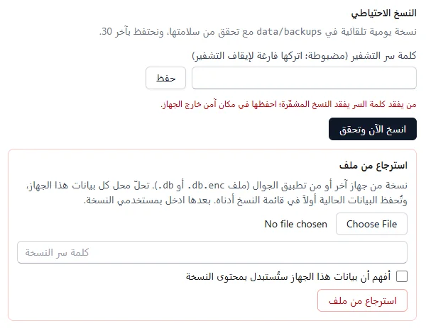
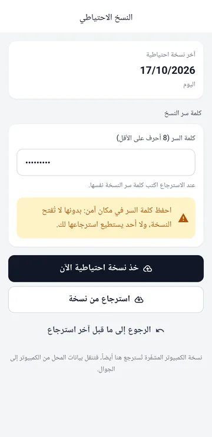
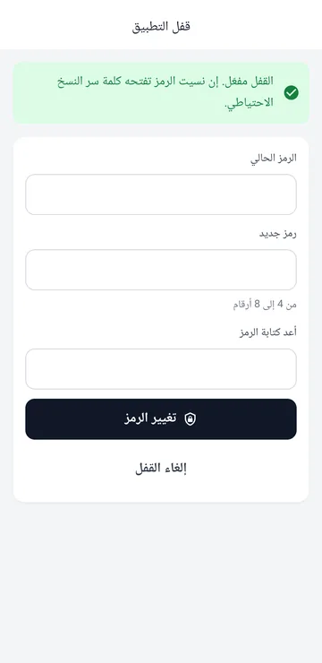

الأمان والنسخ الاحتياطي
بياناتك على جهازك وحده. النسخة الاحتياطية المشفّرة هي ما يحميها من عطل الجهاز أو ضياعه.
- النسخ الاحتياطي على الكمبيوتر
- الاسترجاع ونقل البيانات بين الأجهزة
- النسخ والقفل على الجوال
- كلمات المرور والتحقق بخطوتين
النسخ الاحتياطي على الكمبيوتر
- افتح الإعدادات ← التكامل وانزل إلى النسخ الاحتياطي.
- اكتب كلمة سر للتشفير (8 أحرف على الأقل) واحفظها. من يفقدها يفقد النسخ.
- يأخذ البرنامج نسخة يومية وحده ويتحقق منها، ويحتفظ بآخر 30. انسخ الآن وتحقق لنسخة فورية.
- من وقت لآخر انسخ آخر نسخة إلى ذاكرة خارجية أو إلى Drive، فلا تضيع مع الجهاز. النسخ في المجلد `%APPDATA%\Siro - سيرو\data\backups`: الصقه في شريط العنوان في مستكشف الملفات.

- استعادة للتجربة بجانب كل نسخة في القائمة يفتحها في مجلد جانبي ويتحقق منها، دون أن يمسّ بياناتك.
المزامنة عبر Google Drive تُبقي في حسابك نسخة مشفّرة ينضمّ منها جهاز جديد، لكنها لا تُغني عن النسخ: ما يُحذف خطأً على جهاز يُحذف من الكل.
على الجوال: النسخ والقفل على الجوال.
الاسترجاع ونقل البيانات بين الأجهزة
- في القسم نفسه، تحت استرجاع من ملف: اختر ملف النسخة، اكتب كلمة سرها، وعلّم أفهم أن بيانات هذا الجهاز ستُستبدل بمحتوى النسخة ثم اضغط استرجاع من ملف.
- بعدها ادخل باسم دخول وكلمة مرور من النسخة.
- النسخة تأتي من هذا الكمبيوتر أو من كمبيوتر آخر أو من تطبيق الجوال، فتنتقل البيانات بين الأجهزة بالاتجاهين.
- على جهاز متزامن (فرع أو تابلت أو مزامنة Google Drive) يأخذ الجهاز بعد الاسترجاع هوية جديدة ويقرأ كل شيء من جديد، فتعود إليه عملياته التي وصلت كمبيوتر الشركة بعد تاريخ النسخة، ولا تتكرر أرقام فواتيره.
على الجوال: النسخ الاحتياطي ← استرجاع من نسخة (كيف).
النسخ والقفل على الجوال
على الجوال فقط. على المحل المستقل؛ الجهاز التابع يُنسخ مع كمبيوتر الشركة ويُحمى بتسجيل الدخول.
- النسخ الاحتياطي من مجموعة الجهاز: اكتب كلمة سر واضغط خذ نسخة احتياطية الآن، ثم احفظ الملف في Drive أو أرسله لنفسك. يفتح التطبيق النسخة بعد تشفيرها ويتحقق أنها تُسترجع قبل أن يعرض المشاركة، وتظهر النتيجة أعلى الشاشة: آخر تجربة استعادة … نجحت، أو سبب الفشل فلا تعتمد تلك النسخة.
- استرجاع من نسخة يعيد نسخة من الجوال أو من الكمبيوتر، والرجوع إلى ما قبل آخر استرجاع يتراجع عنها.
- قفل التطبيق (بعد أخذ نسخة بكلمة سر): الرمز من 4 إلى 8 أرقام ثم تفعيل القفل: يُطلب عند الفتح وبعد الغياب أكثر من دقيقتين. لتغييره: الرمز الحالي ورمز جديد ثم تغيير الرمز، ولإيقافه: الرمز الحالي ثم إلغاء القفل. إن نسيته تفتحه كلمة سر النسخ.


يذكّرك التطبيق إن مرّ أسبوع بلا نسخة.
كلمات المرور والتحقق بخطوتين
- نسي موظف كلمة مروره: المالك يفتح الإعدادات ← المستخدمون (على الجوال المستخدمون) ويكتب كلمة مرور جديدة بجانب اسمه ثم تغيير.
- كلمة مرورك أنت: حسابي (اضغط اسمك في الشريط العلوي، وعلى الجوال أيقونة الحساب أعلى الشاشة الرئيسية) ← تغيير كلمة المرور. تنتهي بعدها كل جلساتك وتدخل من جديد.
- التحقق بخطوتين من حسابي: رمز من تطبيق المصادقة على هاتفك (Google Authenticator مثلاً) مع كلمة المرور. احفظ رموز الاسترداد التي تظهر مرة واحدة: كل رمز يدخلك مرة إن فقدت الهاتف. إذا ألزم المالك دورك بالتحقق بخطوتين فلا يفتح الجوال ولا الكمبيوتر غير حسابي حتى تفعّله.
- هاتف جديد لتطبيق المصادقة: أوقف التحقق بخطوتين أولاً برمز من الهاتف القديم أو برمز استرداد، ثم فعّله من جديد بالهاتف الجديد.
- فقد موظف هاتفه ورموزه: المالك يضغط إعادة ضبط التحقق بجانب اسمه. ولإلزام دور بالتحقق بخطوتين علّمه تحت التحقق بخطوتين في الإعدادات ← المستخدمون (وعلى الجوال في المستخدمون ← التحقق بخطوتين).
- أجهزة داخلة بحسابك لا تعرفها؟ حسابي ← الأجهزة الداخلة بحسابك ← إنهاء أو إنهاء كل الجلسات الأخرى. والمالك يرى الجلسات المفتوحة لكل المستخدمين.
- خمس محاولات خاطئة تقفل الحساب 15 دقيقة («مقفل مؤقتاً»).
- كل دخول وتغيير مهم يُسجَّل في الإعدادات ← التدقيق: من فعل ماذا ومتى.
على الجوال: حسابي من أيقونة الحساب أعلى الشاشة الرئيسية؛ للتحقق بخطوتين اضغط تفعيل، ثم أضف المفتاح في تطبيق المصادقة أو اضغط فتح في تطبيق المصادقة إن كان على الجوال نفسه، واكتب الرمز واضغط تأكيد وتفعيل. والمستخدمون من مجموعة الإدارة. على الجوال المستقل: أكثر من شخص على جوال واحد.